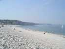
Fécamp, c'est une grande plage de galets, avec 1 m de sable à marée très basse. Au fond, Etretat. C'est une côte de falaises, avec des vallées qui abritent de petits ports-balnéaires...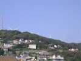
Récemment, on a installé des éoliennes sur le plateau au haut de la falaise, mais on ne les voit pas trop de la plage...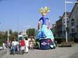
Et c'est le festival Eurovoiles, qui mêle vieux gréements et cerfs-volants. La reine vous accueille à l'entrée du port !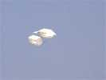
Samedi matin, vent de terre, qui s'évanouira avec l'arrivée de la brise de mer, et finira par s'établir au nord en début d'après-midi. Et là, ce sera très turbulent, avec l'obstacle de la falaise à contourner ! Ca n'empêche pas les classiques de se mettre en l'air !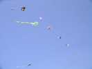
Il y a aussi des choses plus modernes, des cerfs-volants ou des queues...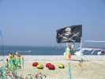
Et le drapeau des Pirates flotte sur les JdVs, les cactus de Fernando et les coccinelles !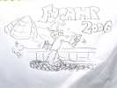
Les Gwenn Ha Du sont là aussi, Will s'est représenté, avec son talent habituel, aux prises avec les lignes qui traînent par terre...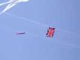
Nos amis anglais sont venus aussi, par bateau. Ils lèvent bien haut leur flag, de structure identique mais moins arrogant quand même que celui du Koweit à Berck...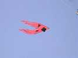
Du delta, aussi, toujours mis à de nouvelles sauces...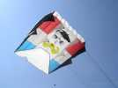
Big Moustaches est descendu comme d'habitude, avec Ans, son béret et son cerf-volant personnel...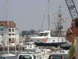
Il y a même des bateaux qui volent, mais sans la grâce des cerfs-volants, évidemment !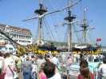
Le Grand Turc, vaisseau de haut bord trois-mâts est de la fête mais partira en milieu de journée. A marée haute, on ouvre l'écluse et il passe dans le chenal à ras des spectateurs !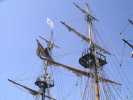
Sa mâture est réellement impressionnante !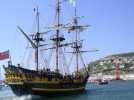
...et ses formes arrières inspirent le respect... Mais, au revoir, Grand Turc !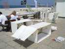
Voilà le cerf-volant classique au sol : coton et bambou, bien sûr... Mais pourquoi n'avoir pas mis la vergue en position haute ? On a envie de le faire voler à l'envers...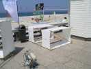
Un autre modèle, un Plano de Pantenier, BIII bis...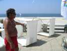
...et ce grand cellulaire simple, mais qui volera impeccablement, sur la diagonale ! A gauche, son créateur, que je ne connais pas.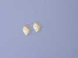
Et voilà, il restera en vol tout l'après-midi !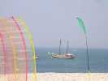
Les vieux gréements sortent et apparaissent entre les bannières des JdVs !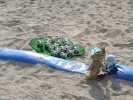
Un petit JdV, et pourtant 17 têtes de bétail dans la prairie...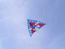
Ce grand delta a finalement été mis en l'air ! Malheureusement, il illustre le problème des quilles qui empêchent de voir le dessin...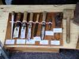
Au fond du port, divers stands de pêcheurs, avec leur matériel, des maquettes, des images de cette épopée, cruelle, mais épopée quand même !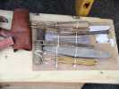
Ici, divers outils pour faire les épissures ou réparer les cordages ou les filets : navettes, épissoirs...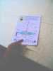
Des ateliers pour enfants étaient aussi au menu... Construction de bateaux avec des bouteilles, du contreplaqué et du plastique.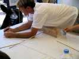
C'est quand même plus compliqué que des minis-coccinelles et les enfants tous seuls ne font pas grand-chose...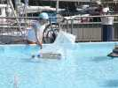
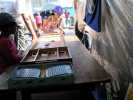
Des jeux : une des multiples variantes de jeu de palets...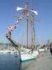
Et des bateaux sérieux : l'Etoile a une ligne magnifique ! Avec sa soeur, la Belle Poule, elle faisait partie de l'école d'amarinage de la Marine Nationale, passage obligé pour les officiers de marine...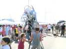
Dans les rues, partout, c'est la fête. Des monstres effrayants se jettent sur les enfants... Effet des jeux vidéos modernes ? Ils n'ont même pas peur !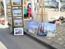
Le long de la criée, exposition de peintures marines. Celles-ci, signées Meiger, m'ont bien plu...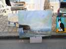
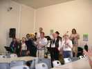
Le soir, dîner dans la Criée, avec les marins. Un choeur-orchestre très animé nous régale de chansons de marins ...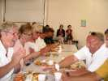
Le repas : poisson surtout agrémenté de crevettes, patate, pâtisserie...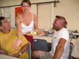
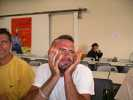
William est très en verve, ce soir, et les idées fusent !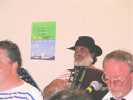
Dans l'orchestre, de vraies têtes de pêcheurs, comme celle de l'accordéoniste...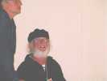
...ou celle de l'ingénieur du son. Je ne sais pas s'il entend encore bien, mais on ne comprend rien aux paroles des chansons, la sono mal réglée ou la réverbération sur les murs lisses ?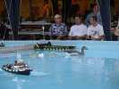
Sur le bassin de quai, radiocommande à l'honneur : tout un port, des remorqueurs, et... une famille de canards qui se dandine à la queue-leu-leu...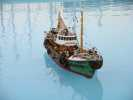
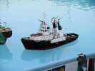
...un bateau pompe qui arrose par surprise les curieux et surtout les fumeurs sur le bord du bassin !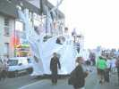
Dans les rues, un char tout blanc...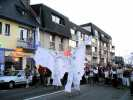
...et des danseuses sur échasses, drapées dans des voiles féeriques...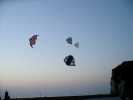
Et c'est parti pour le vol de nuit. Ceux qui veulent voler volent, et on a le soleil couchant puis les réverbères pour s'éclairer... Les Gwenn ne ratent pas l'occasion avec leurs Nasas, quel que soit le vent... Ce soir, il n'est pas fort, mais bien lisse, revenu de terre.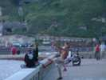
Ca tire assez pour escalader facilement le mur de la promenade...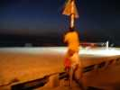
Et quand ça tire trop, il y a les poteaux pour se bloquer, mais attention à la position !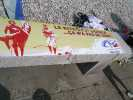
La FFVL a voulu mêler son grain de sel... Le message n'est pas clair : y a pas besoin d'avoir du sens pour s'amuser !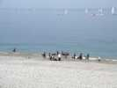
Hier, les chiens étaient jugés sur le port. Aujourd'hui, c'est dans l'eau. Majorité de Terre-Neuve, dans des exercices divers : ramener un homme, porter une amarre à un canot...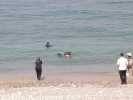
C'est l'échauffement, ou l'apprentissage pour les jeunes : on commence par ramener un mannequin !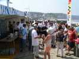
Pour les cervolistes, interruption méridienne : le vent tombe, ça... tombe bien, faut se restaurer. D'abord, un petit pot en attendant les saucisses, ça permet de discuter plus facilement.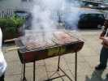
Les saucisses sont prêtes, les légumes, le fromage et les desserts sont là, les cubis sont ouverts, plus qu'à y aller. Manque rien ? Si, des assiettes ! Bof, on gratte, on lave, on se débrouille toujours !